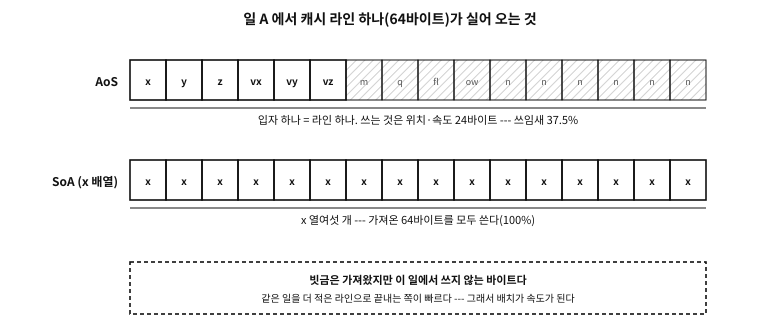

51 자료 배치와 캐시 — 구조체의 배열인가, 배열의 구조체인가
먼저 알아야 할 것
돌아보기
12장에서 같은 개수의 값을 읽어도 순서만 바꾸면 시간이 몇 배로 달라지는 것을 재어 보았다. 순서는 알고리즘이 정하는 줄 알았다. 자료를 어떻게 늘어놓는가도 순서를 정하는가?
답. 정한다. 그리고 대개 알고리즘보다 먼저 정한다. 기계는 값을 하나씩 가져오지 않고 캐시 라인 단위로 가져온다 — 이 기계에서는 64바이트다. 한 번 가져온 64바이트 가운데 몇 바이트를 실제로 쓰는가가 자료의 배치로 정해진다. 같은 반복문이 같은 일을 해도, 구조체를 배열로 늘어놓았는가 필드마다 배열을 두었는가에 따라 쓰는 바이트의 비율이 달라지고, 그 비율이 그대로 속도가 된다.
이 장의 필요성과 맥락
이 장이 끝나면
이 장에서 답할 질문
- 그렇다면 처음부터 모든 자료를 SoA 로 짜 두면 되지 않는가?
51.1 자료 배치란 무엇인가 — 같은 자료, 다른 순서#
자료 배치(data layout)는 같은 자료를 기억에 어떤 순서로 깔 것인가의 선택이다. 입자 백만 개가 있고, 입자마다 위치·속도·질량·이름이 있다고 하자. 늘어놓는 방법은 크게 셋이다.
| 이름 | 모양 | 기억에 놓이는 순서 |
|---|---|---|
| 구조체의 배열(array of structures, AoS) | struct particle p[N]; | 입자 1 의 모든 필드, 입자 2 의 모든 필드, … |
| 배열의 구조체(structure of arrays, SoA) | struct { float x[N], y[N], … }; | 모든 입자의 x, 모든 입자의 y, … |
| 묶음 단위 섞기(AoSoA) | struct { float x[8], y[8], … } p[N / 8]; | 입자 8개의 x, 그 8개의 y, … 다음 8개 |
표 51.1 — 같은 자료를 늘어놓는 세 방법
AoS 는 C 의 자연스러운 모양이다. 48장의 「구조체의 배열」이 그것이고, 대부분의 코드는 이렇게 시작한다. SoA 는 필드마다 배열을 하나씩 둔다. AoSoA 는 둘의 중간이다 — 작은 묶음 안에서는 SoA, 묶음끼리는 AoS.
51.1.1 왜 순서가 속도인가#
12장의 요점을 한 줄로 다시 적으면 이렇다. 기계는 바이트가 아니라 캐시 라인을 가져온다. 이 책의 실측 기계에서 캐시 라인은 64바이트다. float 하나(4바이트)를 읽으려 해도 그것이 든 64바이트가 통째로 온다.
그래서 물어야 할 것은 「한 번 가져온 64바이트 가운데 몇 바이트를 쓰는가」다. 이 책은 이것을 쓰임새 비율이라 부른다. 위치만 갱신하는 반복문이 64바이트짜리 입자 구조체를 훑으면, 라인 하나에서 위치와 속도 24바이트만 쓰고 40바이트는 버린다 — 쓰임새 비율 37.5%. SoA 에서 x 배열을 훑으면 라인 하나의 64바이트가 모두 x 다 — 100%. 가져오는 양이 같다면 쓰임새가 높은 쪽이 같은 일을 더 적은 라인으로 끝낸다.

그림 51.1 — AoS 의 라인은 일 A 에서 37.5% 만 쓰이고, SoA 의 x 라인은 모두 쓰인다.
51.2 재어 보기 — 두 가지 일, 세 가지 배치#
이 책의 원칙대로 직접 잰다. 입자 백만 개를 세 배치로 놓고 두 가지 일을 시킨다.
- 일 A: 모든 입자를 움직인다 — 위치에 속도를 더한다. 필드 16개 가운데 6개를 쓴다.
- 일 B: 무작위로 고른 입자들의 모든 필드를 읽는다.
examples/data-layout/aos_soa/aos_soa.c
/* 같은 입자를 세 가지로 늘어놓고, 각각에 두 가지 일을 시킨다.
★ 이 예제는 시간을 잰다. 그래서 나오는 수는 기계마다, 회차마다 다르다.
절대 시간은 찍지 않고 배수만 낸다 --- 남길 것은 결론뿐이다. */
#include <stdint.h>
#include <stdio.h>
#include <stdlib.h>
#include <time.h>
/* 입자 약 백만 개: AoS 로 64 MiB --- 캐시보다 훨씬 크다 */
#define N (1u << 20)
#define ROUNDS 5
#define PICKS (1u << 18)
/* (1) AoS: 입자마다 구조체 하나, 모든 것을 함께 --- 64바이트, 캐시 라인 하나 */
struct particle {
float x, y, z, vx, vy, vz;
float mass, charge;
uint32_t flags, owner;
char name[24];
};
static_assert(sizeof(struct particle) == 64);
/* (2) 뜨거운·찬 쪼개기: 갱신 반복문이 쓰는 것과 쓰지 않는 것을 가른다 */
struct hot { float x, y, z, vx, vy, vz; }; /* 24바이트 */
struct cold { float mass, charge; uint32_t flags, owner; char name[24]; };
/* (3) SoA: 필드마다 배열 하나 */
struct particles { float *x, *y, *z, *vx, *vy, *vz, *mass; };
static struct particle *aos;
static struct hot *hot;
static struct cold *cold;
static struct particles soa;
static uint32_t *pick;
static volatile float sink;
static double now(void) { return (double)clock() / CLOCKS_PER_SEC; }
/* 일 A: 모든 입자를 움직인다 --- 필드 16개 가운데 6개를 쓴다 */
static double move_aos(void)
{
double t = now();
for (uint32_t i = 0; i < N; i++)
{ aos[i].x += aos[i].vx; aos[i].y += aos[i].vy; aos[i].z += aos[i].vz; }
return now() - t;
}
static double move_hot(void)
{
double t = now();
for (uint32_t i = 0; i < N; i++)
{ hot[i].x += hot[i].vx; hot[i].y += hot[i].vy; hot[i].z += hot[i].vz; }
return now() - t;
}
static double move_soa(void)
{
double t = now();
for (uint32_t i = 0; i < N; i++) soa.x[i] += soa.vx[i];
for (uint32_t i = 0; i < N; i++) soa.y[i] += soa.vy[i];
for (uint32_t i = 0; i < N; i++) soa.z[i] += soa.vz[i];
return now() - t;
}
/* 일 B: 흩어진 입자들의 모든 필드를 한꺼번에 본다 */
static double look_aos(void)
{
double t = now(); float acc = 0;
for (uint32_t k = 0; k < PICKS; k++) { const struct particle *p = &aos[pick[k]];
acc += p->x + p->y + p->z + p->vx + p->vy + p->vz + p->mass; }
sink = acc; return now() - t;
}
static double look_soa(void)
{
double t = now(); float acc = 0;
for (uint32_t k = 0; k < PICKS; k++) { uint32_t i = pick[k];
acc += soa.x[i] + soa.y[i] + soa.z[i] + soa.vx[i] + soa.vy[i] + soa.vz[i]
+ soa.mass[i]; }
sink = acc; return now() - t;
}
static int cmp(const void *a, const void *b)
{ double x = *(const double *)a, y = *(const double *)b; return (x > y) - (x < y); }
static double median(double (*job)(void))
{
double r[ROUNDS];
job(); /* 데우기 --- 버린다 */
for (int i = 0; i < ROUNDS; i++) r[i] = job();
qsort(r, ROUNDS, sizeof *r, cmp);
return r[ROUNDS / 2];
}
int main(void)
{
aos = calloc(N, sizeof *aos);
hot = calloc(N, sizeof *hot); cold = calloc(N, sizeof *cold);
float **f[] = { &soa.x, &soa.y, &soa.z, &soa.vx, &soa.vy, &soa.vz, &soa.mass };
for (size_t k = 0; k < sizeof f / sizeof f[0]; k++) *f[k] = calloc(N, sizeof(float));
pick = malloc(PICKS * sizeof *pick);
if (!aos || !hot || !cold || !pick || !soa.x || !soa.y || !soa.z
|| !soa.vx || !soa.vy || !soa.vz || !soa.mass)
{ puts("out of memory"); return 1; }
uint64_t rng = 0x9E3779B97F4A7C15u;
for (uint32_t k = 0; k < PICKS; k++) {
rng ^= rng << 13; rng ^= rng >> 7; rng ^= rng << 17;
pick[k] = (uint32_t)(rng >> 32) % N;
}
for (uint32_t i = 0; i < N; i++) {
float v = (float)(i % 7) * 0.25f;
aos[i].vx = aos[i].vy = aos[i].vz = v;
hot[i].vx = hot[i].vy = hot[i].vz = v;
soa.vx[i] = soa.vy[i] = soa.vz[i] = v;
}
double a = median(move_aos), h = median(move_hot), s = median(move_soa);
double la = median(look_aos), ls = median(look_soa);
printf("%u particles; a struct is %zu bytes, a hot part %zu bytes\n\n",
N, sizeof *aos, sizeof *hot);
puts("job A: move every particle (6 of the 16 fields)");
if (s > 0 && h > 0) {
printf(" AoS took %.1f times as long as SoA\n", a / s);
printf(" hot/cold split took %.1f times as long as SoA\n", h / s);
} else puts(" the clock is too coarse on this machine to tell them apart");
puts("job B: read every field of particles picked at random");
if (la > 0) printf(" SoA took %.1f times as long as AoS\n", ls / la);
else puts(" the clock is too coarse on this machine to tell them apart");
puts("\n(ratios only: they change with the machine, the compiler and the run.)");
free(aos); free(hot); free(cold); free(pick);
for (size_t k = 0; k < sizeof f / sizeof f[0]; k++) free(*f[k]);
return 0;
}
실행 결과
1048576 particles; a struct is 64 bytes, a hot part 24 bytes
== -O0
job A: move every particle (6 of the 16 fields)
AoS took 1.0 times as long as SoA
hot/cold split took 1.0 times as long as SoA
job B: read every field of particles picked at random
SoA took 1.6 times as long as AoS
== -O2
job A: move every particle (6 of the 16 fields)
AoS took 2.3 times as long as SoA
hot/cold split took 1.0 times as long as SoA
job B: read every field of particles picked at random
SoA took 2.2 times as long as AoS
(ratios only: they change with the machine, the compiler and the run.)
플랫폼 노트. 잰 기계와 조건
clock 으로 재고 다섯 번의 중앙값을 쓴다. 절대 시간은 인쇄하지 않는다 — 배수만 남긴다. 이 책을 만들 때마다 다시 재므로 위의 수는 판마다 조금씩 다르다. 집필 때 여러 번 잰 범위는 대략 이렇다: -O2 에서 일 A 의 AoS 는 SoA 의 2~3.5배, 일 B 의 SoA 는 AoS 의 2배 남짓. 다른 기계에서는 다른 수가 나온다. 그래서 결론만 가져간다.세 가지를 읽을 수 있다.
첫째, 최적화를 끄면 배치의 차이가 거의 보이지 않는다. -O0 에서는 명령 하나하나가 기억에서 값을 읽고 쓰느라 바빠서, 기억을 가져오는 비용이 그 뒤에 숨는다. 배치의 효과를 보려면 최적화한 빌드로 재야 한다 — 디버그 빌드의 속도로 성능을 판단하지 않는다.
둘째, 일 A 에서는 SoA 가 이긴다. 필요한 필드만 촘촘히 놓여 있어 가져온 라인을 다 쓴다. 그리고 컴파일러는 같은 타입이 이어진 배열을 한 번에 여러 개씩 더하는 SIMD(single instruction, multiple data) 명령으로 바꾸기 쉽다(자동 벡터화).
셋째, 일 B 에서는 AoS 가 이긴다. 입자 하나의 모든 필드가 라인 하나에 모여 있으니, 무작위로 고른 입자 하나에 라인 하나면 된다. SoA 에서는 같은 입자의 필드 일곱 개가 일곱 배열에 흩어져 있어 라인 일곱 개를 가져온다.
51.2.1 뜨거운 필드와 찬 필드#
출력의 가운데 줄, 「뜨거운·찬 쪼개기」(hot/cold split)는 둘 사이의 타협이다. 자주 쓰는 필드(뜨거운 필드)만 작은 구조체로 묶어 배열로 두고, 드물게 쓰는 필드(찬 필드 — 이름, 소유자, 플래그)는 다른 배열로 뺀다. 뜨거운 구조체는 24바이트라 일 A 의 쓰임새 비율이 100% 에 가깝다. 그래서 SoA 와 거의 같은 속도가 나면서, 코드는 여전히 「입자 하나 = 구조체 하나」로 읽힌다. 실무에서 가장 자주 쓰이는 처방이 이것이다 — 구조체를 통째로 SoA 로 뒤집기 전에, 찬 필드부터 빼낸다.
51.3 언제 무엇이 이기는가#
결론은 「SoA 가 빠르다」가 아니다. 무엇을 묻는 코드가 많은가가 배치를 정한다.
| 코드가 주로 하는 일 | 유리한 배치 | 까닭 |
|---|---|---|
| 많은 원소의 몇 필드를 한 번에 훑는다 | SoA, 또는 뜨거운·찬 쪼개기 | 쓰는 필드만 가져온다, 벡터화가 쉽다 |
| 원소 하나의 모든 필드를 띄엄띄엄 본다 | AoS | 원소 하나 = 라인 하나 |
| 둘 다 많다 | 뜨거운·찬 쪼개기, AoSoA | 훑는 쪽과 집는 쪽을 각각 살린다 |
| 원소가 적다(수백 개 이하) | 아무것이나 — 읽기 쉬운 쪽 | 전부 캐시에 들어간다. 배치의 차이가 없다 |
| 원소를 자주 넣고 뺀다 | AoS(또는 아래의 촘촘한 배열) | SoA 는 배열마다 따로 옮겨야 한다 |
표 51.2 — 배치를 고르는 순서
넷째 줄이 중요하다. 자료가 캐시에 다 들어가면 배치를 바꿔도 얻는 것이 거의 없다. 배치를 바꾸기 전에 자료가 얼마나 큰가부터 본다. 이 기계의 L1 데이터 캐시는 코어마다 32 KiB, L2 는 256 KiB, L3 는 16 MiB 다(부록 M).
문. 그렇다면 처음부터 모든 자료를 SoA 로 짜 두면 되지 않는가?
답. 권하지 않는다. SoA 는 어떤 일에 유리한 배치이지 언제나 빠른 배치가 아니다 — 위의 일 B 처럼 원소 하나를 통째로 보는 코드에서는 오히려 느리다. 그리고 다음 절에서 보듯 값이 있다. 코드가 「원소 하나」를 다루기 어색해지고, 지켜야 할 불변식이 늘어난다. 순서는 이렇다 — 먼저 읽기 쉬운 모양(대개 AoS)으로 쓰고, 재어서 뜨거운 반복문을 찾고, 그 반복문이 쓰는 필드부터 쪼갠다. 배치는 나중에 바꿀 수 있게 감싸 두는 것이 처음부터 SoA 로 짜는 것보다 낫다 — 원소를 넣고 빼고 읽는 일을 함수 몇 개로 모아 두면, 그 안의 배치는 바깥을 고치지 않고 바꿀 수 있다.
51.4 SoA 의 값#
SoA 는 공짜가 아니다.
- 배열 여러 개의 길이를 함께 지켜야 한다.
x에는 원소를 넣고y에는 넣지 않으면, 그 뒤 모든 색인이 한 칸씩 어긋난다. 컴파일러는 이것을 모른다 — 「배열 일곱 개의 길이가 같다」는 불변식은 사람이 지킨다. 그래서 SoA 는 넣기·빼기를 한 함수로만 하게 감싼다. - 원소 하나를 넘기기가 어색하다. 「입자 하나」를 가리키는 것이 포인터가 아니라 색인이 된다. 함수는
(struct particles *ps, size_t i)를 받는다. - 넣고 빼는 비용. 가운데 원소를 빼면 배열마다 뒤를 당겨야 한다. 순서가 상관없다면 바꿔 지우기(swap-remove)를 쓴다 — 지울 자리에 마지막 원소를 옮기고 길이를 하나 줄인다. 배열이 늘 촘촘하게(빈칸 없이) 유지되어 훑는 반복문이 빠르다.
- 색인이 바뀐다. 바꿔 지우기는 마지막 원소의 색인을 바꾼다. 바깥에서 그 원소를 색인으로 쥐고 있던 코드는 엉뚱한 원소를 보게 된다. 그래서 바깥에는 색인 대신 세대 번호를 단 핸들을 내주고, 핸들에서 지금의 색인을 찾는 표를 따로 둔다(58장).
51.5 캐시에 유리한 자료 구조#
배치의 원리 — 「함께 쓰는 것을 가까이, 따라가는 횟수를 적게」 — 는 자료 구조를 고를 때도 그대로 쓰인다.
51.5.1 포인터를 따라가는 비용#
연결 목록은 자료 구조 교과서의 첫 장에 나오지만, 캐시의 눈으로 보면 가장 비싼 구조 가운데 하나다. 다음 노드의 주소는 지금 노드를 읽어야 안다. 기계는 다음에 읽을 자리를 미리 가져올 수 없다.
examples/data-layout/chase.c
/* 같은 백만 개의 수를 세 가지로 더한다: 배열, 노드가 마침 차례대로 놓인 연결 목록,
그리고 힙을 「한동안 쓴 뒤」의 같은 목록(노드를 섞인 순서로 이음).
★ 이 예제는 시간을 잰다. 배수만 인쇄한다. */
#include <stdint.h>
#include <stdio.h>
#include <stdlib.h>
#include <time.h>
#define N (1u << 20)
#define ROUNDS 5
struct node { struct node *next; uint32_t value; }; /* 목록 */
static uint32_t *arr; /* 배열 */
static struct node *pool, *in_order, *shuffled;
static volatile uint64_t sink;
static double now(void) { return (double)clock() / CLOCKS_PER_SEC; }
static double sum_array(void)
{
double t = now(); uint64_t s = 0;
for (uint32_t i = 0; i < N; i++) s += arr[i];
sink = s; return now() - t;
}
static double walk(const struct node *p)
{
double t = now(); uint64_t s = 0;
for (; p; p = p->next) s += p->value;
sink = s; return now() - t;
}
static double walk_in_order(void) { return walk(in_order); }
static double walk_shuffled(void) { return walk(shuffled); }
static int cmp(const void *a, const void *b)
{ double x = *(const double *)a, y = *(const double *)b; return (x > y) - (x < y); }
static double median(double (*job)(void))
{
double r[ROUNDS];
job();
for (int i = 0; i < ROUNDS; i++) r[i] = job();
qsort(r, ROUNDS, sizeof *r, cmp);
return r[ROUNDS / 2];
}
static struct node *make_list(uint32_t *order)
{
for (uint32_t k = 0; k + 1 < N; k++) pool[order[k]].next = &pool[order[k + 1]];
pool[order[N - 1]].next = nullptr;
return &pool[order[0]];
}
int main(void)
{
arr = malloc(N * sizeof *arr);
pool = malloc(N * sizeof *pool);
uint32_t *order = malloc(N * sizeof *order);
if (!arr || !pool || !order) { puts("out of memory"); return 1; }
for (uint32_t i = 0; i < N; i++) { arr[i] = i; pool[i].value = i; order[i] = i; }
in_order = make_list(order);
double a = median(sum_array), l = median(walk_in_order);
/* 노드가 아니라 연결을 섞는다 */
uint64_t rng = 0x2545F4914F6CDD1Du;
for (uint32_t i = N - 1; i > 0; i--) {
rng ^= rng << 13; rng ^= rng >> 7; rng ^= rng << 17;
uint32_t j = (uint32_t)(rng >> 32) % (i + 1), t = order[i];
order[i] = order[j]; order[j] = t;
}
shuffled = make_list(order);
double s = median(walk_shuffled);
printf("%u numbers; a node is %zu bytes, a number %zu\n\n",
N, sizeof *pool, sizeof *arr);
if (a > 0) {
printf("list, nodes in memory order : %5.1f times as long as the array\n", l / a);
printf("list, nodes scattered : %5.1f times as long as the array\n", s / a);
} else puts("the clock is too coarse on this machine to tell them apart");
puts("\n(same nodes, same values; only where the next one lives has changed.)");
free(arr); free(pool); free(order);
return 0;
}
실행 결과
1048576 numbers; a node is 16 bytes, a number 4
list, nodes in memory order : 2.0 times as long as the array
list, nodes scattered : 32.8 times as long as the array
(same nodes, same values; only where the next one lives has changed.)
같은 노드, 같은 값이다. 노드가 기억에 차례대로 놓여 있으면 목록도 배열보다 조금 느린 정도지만, 같은 노드의 연결 순서만 섞으면 수십 배로 느려진다. 오래 돈 프로그램의 힙은 뒤의 상태에 가깝다 — 할당과 해제가 반복되면 「다음 노드」는 기억의 어디에든 있을 수 있다. 그래서 연결 목록이 필요할 때도 노드를 한 배열(풀)에서 꺼내 쓰면 사정이 나아진다.
51.5.2 갈래별 처방#
| 처방 | 무엇을 줄이는가 | 주의 |
|---|---|---|
| 멤버를 큰 것부터 놓기 | 패딩 — 같은 라인에 더 많은 원소(48장) | 형식으로 내보내는 구조체라면 순서가 형식이다(50장) |
| 포인터 대신 32비트 색인 | 원소 크기(8바이트 → 4바이트), 그리고 재배치에 강하다 | 범위 확인이 사라지기 쉽다 — 아래 「보안」 |
| 연결 목록 대신 배열, 또는 풀에서 꺼낸 노드 | 포인터 따라가기 | 가운데 넣기가 비싸다 |
| 작은 n 에서는 선형 탐색 | 가지치기와 따라가기 — 수십 개면 이진 탐색보다 빠를 때가 많다 | n 이 커지면 역전된다. 재어 보고 정한다 |
| 열린 주소법 해시 표 | 버킷마다의 연결 목록 — 한 배열 안에서 이웃 칸을 본다 | 해시가 나쁘면 한 덩어리로 뭉친다(아래 「보안」) |
| 정렬된 배열 + 이진 탐색, B-트리 | 노드 하나가 라인 하나 이상을 채운다 | 이진 탐색 나무보다 높이가 낮다 |
| Eytzinger 배치 | 이진 탐색의 처음 몇 단계가 같은 라인에 모이게 배열을 너비 우선 순서로 놓는다 | 이름과 원리만 적는다 |
| 비트 집합으로 플래그 | bool 한 개 1바이트 → 1비트, 라인 하나에 512개(53장) | 한 비트를 바꾸려면 읽고-바꾸고-쓴다 |
표 51.3 — 캐시에 유리한 자료 구조의 갈래
51.5.3 행렬의 순회와 타일링#
40장에서 2차원 배열은 행 우선으로 놓인다고 했다. 그래서 행을 따라 훑으면 라인을 다 쓰고, 열을 따라 훑으면 원소 하나에 라인 하나를 가져온다. 행렬 곱셈처럼 두 방향을 다 써야 하는 일에서는 타일링(tiling, blocking)을 쓴다. 행렬을 캐시에 들어갈 만한 작은 정사각형 조각으로 나누어, 조각 하나를 다 쓰고 다음 조각으로 넘어간다. 같은 연산을 같은 횟수 하지만, 가져온 라인을 버리기 전에 여러 번 쓴다.
51.6 캐시에 유리한 알고리즘#
자료 구조가 같아도 훑는 방식으로 가져오는 라인 수가 달라진다.
- 한 번 훑을 때 다 하기(루프 합치기). 같은 배열을 세 번 훑어 세 가지 일을 하면 라인을 세 번 가져온다. 한 번에 세 가지를 하면 한 번이다.
- 그 반대(루프 쪼개기). 한 반복문이 너무 많은 배열을 동시에 건드리면 라인들이 서로를 캐시에서 밀어낸다. 위의
move_soa가x·y·z를 따로 세 번 훑는 것이 이쪽이다 — 반복문마다 배열 둘만 건드린다. 둘 중 어느 쪽이 나은지는 자료의 크기와 기계에 달렸다. 재어 본다. - 정렬해서 묶기. 무작위 색인으로 큰 표를 읽어야 한다면, 색인을 먼저 정렬해 같은 라인을 연달아 읽게 한다. 데이터베이스와 컴파일러가 자주 쓰는 방법이다.
- 일괄 처리(batch). 요청 하나마다 「받기 → 해석 → 표 찾기 → 응답」 전체를 돌리는 대신, 요청 여러 개를 단계별로 모아 돈다. 표를 찾는 코드와 자료가 캐시에 머문 채 여러 요청을 처리한다.
- 미리 가져오기. GCC 와 Clang 은
__builtin_prefetch(p)로 「곧 이 자리를 읽는다」를 기계에 알리는 확장을 둔다. 기계의 하드웨어 선행 인출기가 이미 차례대로 읽는 모양은 알아서 잡으므로, 이 확장이 도움이 되는 자리는 불규칙하지만 미리 알 수 있는 접근뿐이다. 재어 보지 않고 넣으면 대개 느려진다. - 벡터화를 돕기. SoA 의 같은 타입 배열, 겹치지 않는다는 약속
restrict(41장), 분기가 없는 반복문 몸통 — 셋이 갖춰지면 컴파일러가 SIMD 명령을 내기 쉽다.
51.7 게임과 서버의 실무#
51.7.1 엔터티·컴포넌트 시스템#
게임 엔진에서 널리 쓰이는 엔터티·컴포넌트 시스템(entity component system, ECS)은 SoA 를 설계의 중심에 둔 구조다. 게임 속의 「물체」(엔터티)는 번호일 뿐이고, 위치·속도·체력 같은 성질(컴포넌트)은 종류마다 촘촘한 배열에 따로 담긴다. 「위치와 속도를 가진 모든 것을 움직인다」 같은 일(시스템)이 그 배열들을 훑는다. 엔터티를 지우면 컴포넌트 배열에서 바꿔 지우기를 하고, 번호는 세대 번호를 단 핸들로 지킨다.
이 생각을 넓게 부르는 이름이 데이터 지향 설계(data-oriented design)다. 「프로그램이 하는 일은 자료를 한 모양에서 다른 모양으로 바꾸는 것이고, 그 자료가 어떻게 놓이고 어떻게 쓰이는지에서 설계를 시작한다」는 태도다. 게임 엔진 개발자 Mike Acton 의 CppCon 2014 기조연설 「Data-Oriented Design and C++」가 이 말을 널리 알렸다.
51.7.2 서버#
서버의 뜨거운 길에도 같은 원리가 온다.
- 연결 표. 연결 수만 개의 상태를 구조체 배열로 둘 때, 요청마다 보는 필드(상태, 시간 제한, 버퍼 위치)와 드물게 보는 필드(주소, 통계)를 가른다.
- 코어마다 자료. 여러 코어가 한 계수기를 함께 올리면, 그 계수기가 든 라인이 코어 사이를 오간다. 코어마다 자기 계수기를 두고, 읽을 때만 합친다.
- 고리 버퍼와 일괄 처리. 받은 것을 고리 버퍼에 쌓고, 단계별로 모아 처리한다(50장).
- 뜨거운 길에서 할당하지 않기. 요청마다
malloc하면 할당자의 장부를 건드리고, 힙의 이곳저곳에 흩어진다. 미리 잡아 둔 풀이나 요청 하나의 수명과 같은 아레나를 쓴다(58장).
51.7.3 거짓 공유 — 배치의 문제로 다시#
13장에서 거짓 공유(false sharing)를 보았다. 두 코어가 서로 다른 변수를 쓰는데, 두 변수가 같은 캐시 라인에 있어서 라인이 코어 사이를 끝없이 오가는 현상이다. 배치의 눈으로 보면 처방은 간단하다 — 코어마다 쓰는 자료를 다른 라인에 놓는다.
struct per_core {
alignas(64) unsigned long count; /* 코어마다 하나, 라인마다 하나 */
};
static struct per_core counters[8];alignas(64)(48장)는 각 원소를 64바이트 경계에서 시작하게 하고, 그래서 구조체의 크기도 64바이트가 된다. 라인 크기는 기계마다 다를 수 있다 — 이 기계는 64바이트지만, 128바이트 단위로 움직이는 기계도 있다. 같은 줄에 두었을 때와 떨어뜨렸을 때의 차이는 부록 M 에서 재어 보았다.
51.8 보안 — 캐시는 비밀을 흘린다#
캐시는 「최근에 무엇을 읽었는가」를 기억한다. 그리고 그 기억은 시간으로 바깥에 드러난다 — 캐시에 있는 값은 빨리, 없는 값은 늦게 읽힌다. 빠르게 하려고 만든 장치가 정보를 흘리는 통로가 된다.
51.8.1 타이밍 부채널 — 비밀에 따라 표를 읽으면#
비밀(암호 열쇠 같은 것)에 따라 어느 표의 어느 칸을 읽을지가 정해지는 코드는, 읽은 칸이 캐시에 남긴 흔적으로 비밀을 흘린다. 2005년 Daniel J. Bernstein 은 다른 컴퓨터에서 도는 네트워크 서버가 OpenSSL 의 AES 로 암호화하는 데 걸린 시간만으로 AES 열쇠 전체를 되찾았다. AES 를 빠르게 구현하는 표준적인 방법이 「열쇠와 평문으로 계산한 색인으로 큰 표를 읽는」 것이었고, 그 표 읽기의 시간이 열쇠를 드러냈다. 그는 「상수 시간의 빠른 AES 소프트웨어를 쓰기가 극히 어렵다」고 썼다.1
그래서 암호 코드는 상수 시간(constant time)으로 쓴다. 비밀에 따라 갈라지는 분기도, 비밀로 계산한 색인으로 읽는 표도 두지 않는다. 이 장의 다른 절과는 정반대의 원칙이다 — 여기서는 캐시를 잘 쓰는 것이 아니라 캐시가 아무것도 알아채지 못하게 하는 것이 목표다. 오늘의 x86·ARM 기계에는 대개 AES 전용 명령이 있어서, 그런 기계에서는 표 없이 AES 를 계산한다.
51.8.2 투기 실행 — 범위 검사를 지나간 읽기#
기계는 분기의 결과를 기다리지 않고 짐작한 쪽을 먼저 실행한다(13장의 분기 예측). 짐작이 틀리면 그 결과를 버린다. 그런데 버린 실행이 캐시에 남긴 흔적은 버려지지 않는다.
if (i < size) /* 기계가 「참」이라고 짐작하면 */
v = table[i]; /* i 가 범위 밖이어도 먼저 읽는다 --- 결과는 버려지지만 */
/* table[i] 가 든 라인은 캐시에 남는다 */2018년에 공개된 Spectre 변종 1(CVE-2017-5753)이 이 자리를 이용한다. 범위 검사가 옳게 적혀 있어도, 투기 실행 중에는 범위 밖을 읽고 그 흔적이 시간으로 드러난다. 리눅스 커널은 이런 자리에 array_index_nospec(index, size) 를 둔다. 범위 검사는 그대로 두고, 그 뒤에 「투기 중에도 [0, size) 안으로 묶인」 색인을 다시 만들어 쓴다.2 응용 프로그램이 직접 다룰 일은 드물지만, 색인으로 표를 읽는 코드가 비밀과 만나는 자리에서는 이 위험을 떠올려야 한다.
51.8.3 해시 표 범람 — 평균만 믿으면#
열린 주소법 해시 표는 캐시에 유리하다. 그 대신 해시가 고르게 퍼진다는 가정에 기댄다. 바깥에서 열쇠를 고를 수 있고 해시 함수를 짐작할 수 있다면, 모든 열쇠를 한 칸으로 몰 수 있다.
examples/data-layout/hashflood.c
/* 열린 주소법 해시 표는 캐시에 유리하다: 배열 하나에서 이웃 칸을 차례로 본다.
그 대신 해시만큼만 좋다. 부딪히도록 고른 열쇠를 넣으면 넣을 때마다 덩어리 전체를
훑는다. 아래의 수는 시간이 아니라 탐색 횟수다 --- 실행마다 같다. */
#include <stdint.h>
#include <stdio.h>
#include <string.h>
#define SLOTS (1u << 16)
#define KEYS 4000u
static uint64_t table[SLOTS];
static bool used[SLOTS];
/* 누구나 짐작할 수 있는 해시: 열쇠의 아래 비트 */
static uint32_t hash_plain(uint64_t k, uint64_t seed) { (void)seed; return (uint32_t)k; }
/* 열쇠를 넣은 섞기: 바깥은 `seed` 를 모른다. (보여 주기용이다 --- 네트워크를 마주한
실제 표는 이 목적으로 설계된 해시를 쓴다. 흔히 SipHash 다.) */
static uint32_t hash_keyed(uint64_t k, uint64_t seed)
{
k ^= seed;
k ^= k >> 33; k *= 0xFF51AFD7ED558CCDu;
k ^= k >> 33; k *= 0xC4CEB9FE1A85EC53u;
k ^= k >> 33;
return (uint32_t)k;
}
static unsigned long insert_all(const uint64_t *keys,
uint32_t (*h)(uint64_t, uint64_t), uint64_t seed)
{
memset(used, 0, sizeof used);
unsigned long probes = 0;
for (uint32_t i = 0; i < KEYS; i++) {
uint32_t s = h(keys[i], seed) & (SLOTS - 1);
while (used[s]) { probes++; s = (s + 1) & (SLOTS - 1); } /* 선형 탐사 */
used[s] = true; table[s] = keys[i];
probes++;
}
return probes;
}
int main(void)
{
static uint64_t ordinary[KEYS], crafted[KEYS];
uint64_t rng = 0x853C49E6748FEA9Bu;
for (uint32_t i = 0; i < KEYS; i++) {
rng ^= rng << 13; rng ^= rng >> 7; rng ^= rng << 17;
ordinary[i] = rng;
crafted[i] = (uint64_t)i << 16; /* 모두 아래 16비트가 같다 */
}
/* 실제 프로그램에서는 프로세스마다 무작위로 */
uint64_t seed = 0x5DEECE66Du;
printf("%u keys into %u slots, linear probing\n\n", KEYS, SLOTS);
printf("plain hash, ordinary keys : %8lu probes\n",
insert_all(ordinary, hash_plain, seed));
printf("plain hash, crafted keys : %8lu probes\n",
insert_all(crafted, hash_plain, seed));
printf("keyed hash, crafted keys : %8lu probes\n",
insert_all(crafted, hash_keyed, seed));
puts("\n(n keys that all collide cost about n*n/2 probes:");
puts(" the work grows with the square.)");
return 0;
}
실행 결과
4000 keys into 65536 slots, linear probing
plain hash, ordinary keys : 4163 probes
plain hash, crafted keys : 8002000 probes
keyed hash, crafted keys : 4168 probes
(n keys that all collide cost about n*n/2 probes:
the work grows with the square.)
같은 4000개의 열쇠가 평소에는 4000번 남짓의 탐색으로 들어가고, 고른 열쇠로는 800만 번이 든다 — 제곱으로 자란다. 2011년에 Alexander Klink 와 Julian Wälde 가 이것을 웹 서버에 적용해, 조작한 요청 하나로 CPU 를 100% 로 묶을 수 있음을 보였다. Java·PHP·Python·Ruby 등 여러 언어의 해시 표가 해당했다.3 처방은 둘이다 — 바깥이 모르는 열쇠를 넣은 해시(이 목적으로 설계된 SipHash 가 흔히 쓰인다), 그리고 입력 개수의 상한.
51.8.4 배치를 바꾸면 생기는 다른 위험#
- 포인터를 색인으로 바꾸면 범위 검사가 사라지기 쉽다.
p->next는 적어도 「어딘가를 가리킨다」고 믿을 근거가 있었지만,pool[n.next]의n.next는 그냥 수다. 바깥에서 온 색인(파일, 패킷, 저장된 상태)이라면 쓰기 전에 범위를 본다. 색인은 포인터와 똑같이 위험하다 — 다만 ASan 같은 도구가 잡아 주지 않는 곳에서 위험하다(풀 안에서는 「범위 안」이기 때문이다). - 다시 쓴 칸의 찌꺼기. 풀이나 바꿔 지우기로 칸을 다시 쓰면, 앞 원소의 필드가 남아 있을 수 있다. 새 원소에 모든 필드를 채우거나 0 으로 지우고 쓴다. 50장의 「다시 쓰는 버퍼의 찌꺼기」와 같은 결이다.
- 용량을 키우는 곱셈. 배열을 두 배씩 키우는 코드의
cap * 2 * sizeof(T)는 넘칠 수 있다(ckd_mul).
51.9 잴 때의 규율#
이 장의 수는 모두 이 기계의 것이다. 배치를 바꾸는 결정을 할 때는 자기 기계, 자기 자료로 다시 잰다.
- 최적화한 빌드로 잰다(
-O2이상). 위의-O0결과가 보이듯, 디버그 빌드는 배치의 효과를 감춘다. - 데우고(첫 회는 버린다), 여러 번 재어 중앙값을 쓴다.
- 절대 시간보다 같은 조건의 배수를 본다.
- 자료의 크기를 캐시 크기와 견준다. 다 들어가는 크기로 재면 배치의 차이가 없어 보인다.
- 리눅스라면
perf stat으로 캐시 미스 수를 함께 본다 — 「왜 빨라졌는가」를 시간이 아니라 원인으로 확인한다. - 그리고 결론만 일반화한다. 「SoA 가 2.3배 빠르다」는 이 기계의 수이고, 「몇 필드만 훑는 일에는 SoA 가 유리하다」는 가져갈 수 있는 결론이다.
51.10 정리#
| 주제 | 요점 |
|---|---|
| 무엇인가 | 같은 자료를 기억에 어떤 순서로 깔 것인가. 기계는 캐시 라인으로 가져오고, 쓰임새 비율이 속도가 된다 |
| AoS 와 SoA | 몇 필드를 많이 훑으면 SoA, 하나의 모든 필드를 띄엄띄엄이면 AoS, 둘 다면 뜨거운·찬 쪼개기 |
| SoA 의 값 | 길이 불변식, 색인으로 가리키기, 바꿔 지우기와 세대 핸들 |
| 자료 구조 | 포인터 대신 색인, 목록 대신 배열, 작은 n 은 선형 탐색, 열린 주소법, B-트리, 비트 집합, 타일링 |
| 알고리즘 | 합치기와 쪼개기, 정렬해서 묶기, 일괄 처리, 미리 가져오기는 재어 보고, 벡터화를 돕기 |
| 실무 | ECS 와 데이터 지향 설계, 코어마다 자료, 뜨거운 길에서 할당하지 않기, alignas(64) |
| 보안 | 비밀에 따라 표를 읽지 않는다(상수 시간), 투기 실행, 열쇠를 넣은 해시와 입력 상한, 색인의 범위 확인 |
| 재기 | 최적화한 빌드, 데우기와 중앙값, 배수, 자료의 크기, 결론만 일반화 |
표 51.4 — 자료 배치 — 한 줄씩
51.11 제8부를 닫으며#
자료의 모양을 만드는 두 문법을 얻었다 — 나란히 놓는 구조체(47–48장)와 겹쳐 놓는 공용체(49장). 그리고 그 모양을 바깥으로 내보내는 법(50장)과, 안에서 여러 개를 늘어놓는 법(이 장)을 보았다. 다섯 장을 꿰는 주제는 하나다: C 의 자료는 기억 속의 바이트이고, 그 바이트의 배치는 프로그래머가 정한다. 제2부에서 배경지식으로 본 엔디안·패딩·캐시가 여기서 문법과 설계로 완전히 회수되었다.
다음 부는 정밀의 부다 — 7장에서 배운 근사의 수학이 C 의 실수 타입으로 내려오고(54장), 34장에서 씨앗을 심은 계약의 관점이 오류 처리로 자라며(55장), 이 책이 곳곳에서 예고해 온 「계약 밖」의 세계 — 정의되지 않은 동작 — 를 정면으로 만난다(56장).